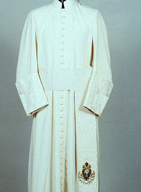

Wednesday, February the 9th, 2005
back to: title, date or indexes
Max Décharné writes from Berlin to note that the Daily Mail is reviving the high standard of tabloid newspaper headlines. On Monday I quoted their Gasping Pope Minutes From Death. “I wish I had a framed copy of the front page on my wall,” writes Max, “It reminds me of those early eighties headlines which got used as punk song titles by the likes of The Exploited. City Baby Attacked By Rats is one I remember well.” To which, of course, should be added the immortal Must We Fling This Filth At Our Pop Kids?
Max goes on to remind us of the winning ways of an earlier pontiff, Eugenio Pacelli, alias Pius XII. “I recommend John Cornwell's fascinating Hitler's Pope—The Secret History of Pius XII. Signor Pacelli seems to have been a humble chap. He ordered that anyone in the clergy who was on the other end of the telephone to him should kneel throughout the conversation, and the gardeners in his private garden were instructed to hide in the bushes as he went past, so he wouldn't have to look at them. Having, of course, sworn an oath of poverty, he drove around in a huge limousine with no chairs in the back, just a large throne. He also seems to have regarded himself as an expert on all manner of subjects. Here is Cornwell:
“If he showed signs of grandiosity it was in his tendency to expatiate on an ever expanding range of topics. So numerous and so beyond his competence were these specialised talks, or ‘allocutions', that the practice seemed symptomatic of ripening delusions of omniscience. He lectured visiting groups on subjects such as dentistry, gymnastics, gynaecology, aeronautics, cinematography, psychology, psychiatry, agriculture, plastic surgery, and the art of newscasting. A visitor to his study once remarked on the piles of fat manuals around his desk; Pacelli responded that he was preparing a talk on gas central heating. When T S Eliot, arguably the leading English-language poet and literary critic of his day, came to the Vatican for a private audience in 1948, Pacelli delivered him a lecture on literature.”
All of which makes me realise that the late Anthony Burgess would have made an absolutely terrific Pope.

Pius XII's soutane and Anthony Burgess, who ought to have worn one like it
Hooting Yard on the Air, February the 16th, 2005 : “Nine Years Ago (Again)” (starts around 13:25)
Hooting Yard on the Air, February the 14th, 2013 : “Vile Mud And Weeds” (starts around 22:46)